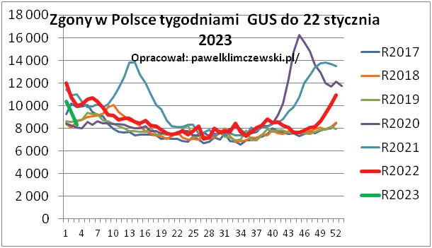
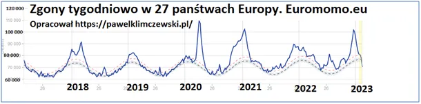
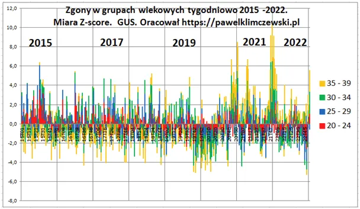

O tym jak wraz z pandemią młodzi ludzie przestali umierać.
GUS podaje już info o zgonach do połowy stycznia 2023. Ostatni wykres robiłem w połowie listopada 2022 (tydzień 47) i czerwona linia była na typowym dla lat poprzednich poziomie 8 000 tygodniowo.

Moim zdaniem, to i tak za dużo, bo w poprzednich dwóch latach odeszło przedwcześnie ponad 200 000 ludzi, głównie najstarszych i teraz powinno być długo poniżej typowych poziomów, ale nie jest. Powinno być tak jak w krajach zachodnich, gdzie krzywa opada poniżej typowych przedziałów. Patrz wykres Euromomo.

Czerwona linia (wyk 1. )niestety w grudniu zbliżyła się do 11 000, co daje 33% więcej niż w 5. normalnych latach poprzednich. Grudzień był co prawda śnieżny, ale ciepły. Wiemy doskonale jak czynnik psychologiczny wpływa na stan zdrowia. Strach i beznadzieja mają tu swój udział. Pociesza jedynie szybko opadająca linia zielona w początkach roku 2023.

Niestety wygląda na to, że w Polce cały czas mamy jakąś epidemię. Trzeci wykres pokazuje miarą Z-score, sezonowe odchylenia od średniej zgonów wśród 20. i 30. latków. Ten wykres to cała epopeja. Na tym wykresie nie widać ile jest a tylko o ile od średniej się odchyla wynik. W normalnych czasach, np. w 2015 roku ludzie w wieku 20-25 rzadko, ale jak już to giną wiosną i latem. Utonięcia, wypadki drogowe, życie...
Na tym wykresie najstarsi żółci mają 35-39 lat, są już w miarę dojrzali i giną losowo przez cały rok. Dzieje się coś dziwnego już pod koniec roku 2019, ludzie z tych grup wiekowych przestają umierać jak zwykle. Grudzień był bardzo łagodny i w całej Europie nie było zgonów grypowych. Potem jest jeszcze ciekawiej, przez całe pół roku 2020, gdy jest straszna epidemia i lockdown umierają wyjątkowo rzadko. Siedzą w domu i są bezpieczni, narazie... Dopiero latem najmłodsi (czerwony) ruszają na swych motorach nad wodę i wracamy do normalnej sytuacji. Ponure żniwa zaczynają się jesienią wraz z reorganizacją służby zdrowia. Ten okres przerabialiśmy dokładnie. Kiepsko wygląda koniec roku 2022, gdy ludzie przed 40-stka odchodzą znacznie częściej niż to bywa zwykle. Sami widzicie, że coś tu jest nie tak, jak trzeba.
Paweł Klimczewski